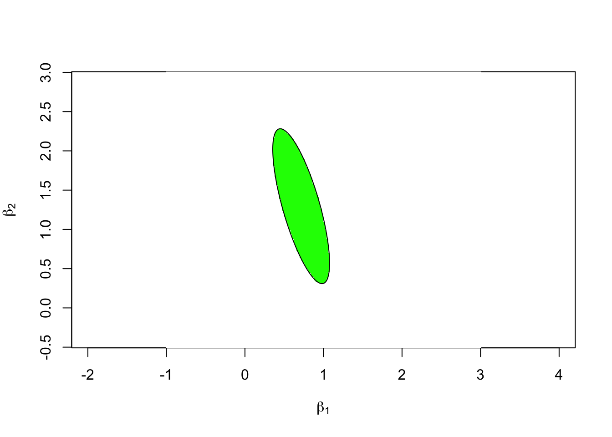

Section 6 Estimating Coefficients Simultaneously
In section 5, we learnt how to construct confidence intervals and hypothesis tests for individual regression coefficients using the \(t\)-distribution. However, as noted there, it would be unwise to apply that procedure to test multiple coefficients on the same data. In this section we will study how to assess the uncertainty in two or more regression coefficients simultaneously. This is needed since the estimates for different coefficients will usually not be independent.
6.1 Linear Combinations of Coefficients
As a general setup which allows to describe which coefficients we are interested in, we consider the image \(K\beta\), where \(K \in \mathbb{R}^{k \times (p+1)}\) with \(k \leq p+1\).
Example 6.1 If \(p = 3\) and \[\begin{equation*} K = \begin{pmatrix} 0 & 1 & 0 & 0 \\ 0 & 0 & 1 & 0 \end{pmatrix}, \end{equation*}\] then \[\begin{equation*} K\beta = \begin{pmatrix} 0 & 1 & 0 & 0 \\ 0 & 0 & 1 & 0 \end{pmatrix} \begin{pmatrix} \beta_0 \\ \beta_1 \\ \beta_2 \\ \beta_3 \end{pmatrix} = \begin{pmatrix} \beta_1 \\ \beta_2 \end{pmatrix}. \end{equation*}\] Thus, this choice of \(K\) would be appropriate if we are interested in \(\beta_1\) and \(\beta_2\) only.
The setup allows for more general questions than just selecting components of \(\beta\). We can also derive statements about linear combinations of the \(\beta_i\), e.g. we will be able to derive confidence intervals for quantities like \(\beta_1 - \beta_2\).
Since \(\hat\beta\) is an estimator for \(\beta\), we can use \(K\hat\beta\) as an estimator for \(K\beta\). From lemma 4.1 we know that \(\hat\beta \sim \mathcal{N}\bigl( \beta, \sigma^2 (X^\top X)^{-1} \bigr)\) and thus we get \[\begin{equation*} K\hat\beta \sim \mathcal{N}\bigl( K \beta, \sigma^2 K (X^\top X)^{-1} K^\top \bigr). \end{equation*}\]
Given an invertible, positive definite matrix \(Q\), we define the shorthand notation \[\begin{equation*} \| v \|_Q^2 := v^\top Q^{-1} v. \end{equation*}\] This is called the Mahalanobis norm when \(Q\) is a covariance matrix. Using this notation for \(Q = K(X^\top X)^{-1} K^\top\), we define \[\begin{equation} F := \frac{\bigl\| K \hat\beta - K \beta \bigr\|_{K(X^\top X)^{-1} K^\top}^2} {k \hat\sigma^2} \tag{6.1} \end{equation}\] as a measure for the distance between \(K\hat\beta\) and \(K\beta\). This quantity plays the role of \(T\) (or more precisely, \(T^2\)) from the previous section. We also need to introduce the \(F\)-distribution, which will take the place of the \(t\)-distribution from the previous section.
Definition 6.1 The \(F\)-distribution with \(\nu_1\) and \(\nu_2\) degrees of freedom is the distribution of \[\begin{equation*} X =\frac{S_1/\nu_1}{S_2/\nu_2}, \end{equation*}\] where \(S_1\) and \(S_2\) are independent random variables with chi-square distributions with \(\nu_1\) and \(\nu_2\) degrees of freedom, respectively.
With these preparations in place, we can state the main result.
Lemma 6.1 Assume that the data follows the model (4.1) and that \(Q := K(X^\top X)^{-1} K^\top\) is invertible. Then \(F \sim F_{k,n-p-1}\), i.e. \(F\) follows a \(F\)-distribution with \(k\) and \(n-p-1\) degrees of freedom.
Proof. We have \[\begin{align*} \hskip-5mm & \bigl\| K \hat\beta - K \beta \bigr\|_Q^2 \\ &= \bigl\| K (\hat\beta - \beta) \bigr\|_Q^2 \\ &= \bigl\| K (X^\top X)^{-1} X^\top \varepsilon\bigr\|_Q^2 \\ &= \varepsilon^\top X (X^\top X)^{-1} K^\top Q^{-1} K (X^\top X)^{-1} X^\top \varepsilon\\ &=: \varepsilon^\top R \varepsilon. \end{align*}\] It is tedious but easy to check that \(R\) is idempotent: \[\begin{align*} R^2 &= \Bigl(X (X^\top X)^{-1} K^\top Q^{-1} K (X^\top X)^{-1} X^\top\Bigr) \Bigl(X (X^\top X)^{-1} K^\top Q^{-1} K (X^\top X)^{-1} X^\top\Bigr) \\ &= X (X^\top X)^{-1} K^\top Q^{-1} K (X^\top X)^{-1} \Bigl(X^\top X (X^\top X)^{-1} \Bigr) K^\top Q^{-1} K (X^\top X)^{-1} X^\top \\ &= X (X^\top X)^{-1} K^\top \Bigl( Q^{-1} K (X^\top X)^{-1} K^\top \Bigr) Q^{-1} K (X^\top X)^{-1} X^\top \\ &= X (X^\top X)^{-1} K^\top Q^{-1} K (X^\top X)^{-1} X^\top \\ &= R. \end{align*}\] When we checked in the proof of Cochran’s theorem (theorem 4.1) that \(\varepsilon^\top H \varepsilon\) was chi-squared distributed, the only property of \(H\) we used was that \(H\) is idempotent. (If you don’t remember the details, it would be a good idea to re-read the proof before continuing.) Thus, the same argument gives that \(\varepsilon^\top R \varepsilon/ \sigma^2\) is chi-squared distributed, and as before the number of degrees of freedom of this chi-squared distribution equals the rank of \(R\). Using the assumption that \(Q\) is invertible, one can show (we skip this part of the proof again) that the rank of \(Q\) equals \(\min(k, p+1) = k\) and thus we find that \[\begin{equation*} S_1 := \frac{1}{\sigma^2} \bigl\| K \hat\beta - K \beta \bigr\|_Q^2 \sim \chi^2(k). \end{equation*}\]
Similarly, from the direct application of Cochran’s theorem in equation (4.8), we know \[\begin{equation*} S_2 := \frac{1}{\sigma^2} (n - p - 1) \hat\sigma^2 \sim \chi^2(n - p - 1). \end{equation*}\]
Since \(S_1\) is a function of \(\hat\beta\) and \(S_2\) is a function of \(\hat\sigma^2\), we can use lemma 5.1 to conclude that \(S_1\) and \(S_2\) are independent. Combining these results we find \[\begin{align*} F &= \frac{\bigl\| K \hat\beta - K \beta \bigr\|_{K(X^\top X)^{-1} K^\top}^2} {k \hat\sigma^2} \\ &= \frac{\frac{1}{\sigma^2} \bigl\| K \hat\beta - K \beta \bigr\|_{K(X^\top X)^{-1} K^\top}^2 / k} {\frac{1}{\sigma^2} (n - p - 1) \hat\sigma^2 / (n - p - 1)} \\ &= \frac{S_1 / k}{S_2 / (n - p - 1)} \\ &\sim F_{k, n - p - 1}. \end{align*}\] This completes the proof.
6.2 Confidence Regions
Using \(F\) as a distance between the unknown true \(K\beta\) and the estimator \(\hat\beta\), it is easy to find a region of \(\mathbb{R}^k\) which covers \(K\beta\) with high probability. Since we now have a \(k\)-dimensional parameter vector, this region will no longer be an interval. Instead, we will get a \(k\)-dimensional ellipsoid.
6.2.1 Result
Define \[\begin{equation*} E := \Bigl\{ z \in \mathbb{R}^k \Bigm| \bigl\| z - K \hat\beta \bigr\|_{K(X^\top X)^{-1} K^\top} \leq \sqrt{k \hat\sigma^2 f_{k,n-p-1}(\alpha)} \Bigr\}, \end{equation*}\] where \(f_{k,n-p-1}(\alpha)\) is the \((1-\alpha)\)-quantile of the \(F_{k,n-p-1}\)-distribution. This is a “ball” around \(K\hat\beta\) in \(\mathbb{R}^k\), where distance is measured using the norm \(\| \;\cdot\; \|_{K(X^\top X)^{-1} K^\top}\) introduced above. The following lemma shows that \(\sqrt{k \hat\sigma^2 f_{k,n-p-1}(\alpha)}\) is the correct choice of “radius” to make the ball cover the true value \(K\beta\) with probability \(1-\alpha\).
Lemma 6.2 We have \[\begin{equation*} P\bigl( K\beta \in E \bigr) = 1 - \alpha, \end{equation*}\] i.e. the set \(E\) is a \((1-\alpha)\)-confidence region for \(K\beta\).
Proof. We have \[\begin{align*} &\hskip-5mm K\beta \in E \\ &\Longleftrightarrow \bigl\| K\beta - K \hat\beta \bigr\|_{K(X^\top X)^{-1} K^\top} \leq \sqrt{k \hat\sigma^2 f_{k,n-p-1}(\alpha)} \\ &\Longleftrightarrow \bigl\| K\hat\beta - K\beta \bigr\|_{K(X^\top X)^{-1} K^\top}^2 \leq k \hat\sigma^2 f_{k,n-p-1}(\alpha) \\ &\Longleftrightarrow \frac{\bigl\| K\hat\beta - K\beta \bigr\|_{K(X^\top X)^{-1} K^\top}^2} {k \hat\sigma^2} \leq f_{k,n-p-1}(\alpha) \\ &\Longleftrightarrow F \leq f_{k,n-p-1}(\alpha) \end{align*}\] Now the claim follows, since \(f_{k,n-p-1}(\alpha)\) is the \((1-\alpha)\)-quantile of \(F\).
6.2.2 Numerical Experiments
We start by fitting a linear model to the stackloss dataset as
before:
Call:
lm(formula = stack.loss ~ ., data = stackloss)
Residuals:
Min 1Q Median 3Q Max
-7.2377 -1.7117 -0.4551 2.3614 5.6978
Coefficients:
Estimate Std. Error t value Pr(>|t|)
(Intercept) -39.9197 11.8960 -3.356 0.00375 **
Air.Flow 0.7156 0.1349 5.307 5.8e-05 ***
Water.Temp 1.2953 0.3680 3.520 0.00263 **
Acid.Conc. -0.1521 0.1563 -0.973 0.34405
---
Signif. codes: 0 '***' 0.001 '**' 0.01 '*' 0.05 '.' 0.1 ' ' 1
Residual standard error: 3.243 on 17 degrees of freedom
Multiple R-squared: 0.9136, Adjusted R-squared: 0.8983
F-statistic: 59.9 on 3 and 17 DF, p-value: 3.016e-09Here I want to consider the two regression coefficients \(\beta_1\) (Air.Flow)
and \(\beta_2\) (Water.Temp). For this we need to construct a matrix \(K\)
with two rows, where each row selects one of the two coefficients:
X <- model.matrix(m)
n <- nrow(X)
p <- ncol(X) - 1
K <- matrix(c(0, 1, 0, 0, # indices in R start at 1, so beta_1 is col. 2
0, 0, 1, 0), # ... and beta_2 is column 3.
byrow = TRUE,
nrow = 2, ncol = 4)
k <- nrow(K)
K.beta.hat <- as.vector(K %*% coef(m))As we have seen in the previous section, for this \(K\) the covariance matrix for the ellipse is \(Q = K (X^\top X)^{-1} K^\top\):
6.2.2.1 A Single Point
To try out the method, we first consider the test point \(m = K\beta = (1, 1)\) and we compute the \(F\) value for this point to see whether the point is inside or outside the ellipse:
a <- c(1, 1)
sigma.hat <- summary(m)$sigma
d <- a - K.beta.hat
F <- t(d) %*% solve(Q, d) / (k * sigma.hat^2)
F [,1]
[1,] 2.834083The \(F\) value, measuring the distance from the centre of the ellipse is \(2.834\) for this test point. This has to be compared to the critical value:
[1] 3.591531Since the \(F\) value is less than the critical value, the point \((1, 1)\) is inside the ellipse. As the next step, we will plot a picture of the full ellipse.
6.2.2.2 Points on a Grid
An easy way to show the ellipse is to repeat the above procedure for all points on a rectangular grid, and then colour the points depending on whether they are inside or outside the ellipse. We start by making a list of grid points.
x.min <- -1
x.max <- 3
y.min <- -0.5
y.max <- 3
L <- 200
xx <- seq(x.min, x.max, length.out = L)
yy <- seq(y.min, y.max, length.out = L)
Z <- as.matrix(expand.grid(x = xx - K.beta.hat[1],
y = yy - K.beta.hat[2],
KEEP.OUT.ATTRS = FALSE))
dim(Z)[1] 40000 2The matrix \(Z\) now has two columns, containing the \(x\) and \(y\) coordinates respectively of the \(200\times 200\) points in our grid. Now we need to compute the \(F\) value for every grid point:
[1] 200 200The resulting matrix contains the \(F\) value for every grid point. Finally, we can mark all the points where \(F\) exceeds the critical value in a plot:
image(x = xx, y = yy, t(F > f.crit), asp = 1,
col = c("green", "white"),
xlab = expression(beta[1]), ylab = expression(beta[2]))
points(K.beta.hat[1], K.beta.hat[2], pch = "+")
The green ellipse in this plot is the 95% confidence ellipse for the vector \((\beta_1, \beta_2)\).
6.2.2.3 Coordinates of the Outline
This sub-section is non-examinable (but hopefully interesting).
Using some more linear algebra, we can find a formula for the coordinates of the points on the ellipse which forms the boundary of the confidence region. For this, we use the Singular Value Decomposition of the matrix \(Q\). This allows to write \(Q\) as \[\begin{equation*} Q = U D V^\top \end{equation*}\] where \(U\) and \(V\) are orthogonal matrices and \(D\) is a diagonal matrix:
$d
[1] 0.0138678012 0.0007364967
$u
[,1] [,2]
[1,] -0.2749061 0.9614711
[2,] 0.9614711 0.2749061
$vt
[,1] [,2]
[1,] -0.2749061 0.9614711
[2,] 0.9614711 0.2749061The R output shows the diagonal elements \(d_{ii}\) of \(D\) and the matrices \(U\) and \(V^\top\). Since \(Q\) is symmetric, we have \(U = V\) and thus \(Q = U D U^\top\) in this case, i.e. we have found a diagonalisation of \(Q\).
Using the SVD we can simplify the norm used in the definition of the ellipse. We write \(D^{-1/2}\) for the matrix which has \(1/\sqrt{d_{ii}}\) on the diagonal. Then we have \[\begin{align*} Q \bigl(D^{-1/2} U^\top \bigr)^\top \bigl(D^{-1/2} U^\top \bigr) &= Q U D^{-1/2} D^{-1/2} U^\top \\ &= U D U^\top U D^{-1} U^\top \\ &= U D D^{-1} U^\top \\ &= U U^\top \\ &= I. \end{align*}\] Thus, \(\bigl(D^{-1/2} U^\top\bigr)^\top \bigl(D^{-1/2} U^\top\bigr)\) is the inverse of \(Q\) and we get \[\begin{align*} \bigl\| z - K \hat\beta \bigr\|_Q^2 &= (z - K \hat\beta)^\top Q^{-1} (z - K \hat\beta) \\ &= (z - K \hat\beta)^\top \bigl(D^{-1/2} U^\top\bigr)^\top \bigl(D^{-1/2} U^\top\bigr) (z - K \hat\beta) \\ &= \Bigl\| D^{-1/2} U^\top (z - K \hat\beta) \Bigr\|^2, \end{align*}\] where the norm on the right-hand side is the usual Euclidean norm. Thus, the boundary of the ellipse consists of all points of the form \(K \hat\beta + d\), where \(e := D^{-1/2} U^\top d\) is a vector of length \[ \| e \| = \sqrt{k \hat\sigma^2 f_{k,n-p-1}(\alpha)}. \] Finally, using polar coordinates, we find the points on the boundary to be \[\begin{equation*} d = U D^{1/2} e = U D^{1/2} \sqrt{k \hat\sigma^2 f_{k,n-p-1}(\alpha)} \begin{pmatrix} \cos(\varphi) \\ \sin(\varphi) \end{pmatrix} \end{equation*}\] with \(\varphi\in [0, 2\pi]\). This allows to plot the boundary line in R.
phi <- seq(0, 2*pi, length.out = 201)
circ <- rbind(cos(phi), sin(phi)) * sqrt(f.crit * k * sigma.hat^2)
ellipse <- svd$u %*% (circ * sqrt(svd$d)) + K.beta.hat
image(x = xx, y = yy, t(F > f.crit), asp = 1,
col = c("green", "white"),
xlab = expression(beta[1]), ylab = expression(beta[2]))
lines(ellipse[1,], ellipse[2,])
To verify that everything is consistent, we have plotted the line on top of the image from the previous subsection. Since the black line perfectly surrounds the green area, both approaches are consistent.
6.3 Hypothesis Tests
We can easily derive a hypothesis test to test the hypothesis \[\begin{equation*} H_0\colon K\beta = m \end{equation*}\] against the alternative \[\begin{equation*} H_1\colon K\beta \neq m, \end{equation*}\] where \(m \in \mathbb{R}^k\).
We redefine \(F\) as \[\begin{equation*} F := \frac{\bigl\| K \hat\beta - m \bigr\|_{K(X^\top X)^{-1} K^\top}^2} {k \hat\sigma^2} \end{equation*}\] using \(m\) in place of the \(K\beta\) above. Then the new definition of \(F\) is the same as (6.1) if \(H_0\) is true.
Lemma 6.3 The test which rejects \(H_0\) if and only if \(|F| > f_{k,n-p-1}(\alpha)\) has significance level \(\alpha\).
Proof. Assume that \(H_0\) is true. Then we have \(K\beta = m\) and thus the \(F\) defined in this section coincides with the expression from equation (6.1). From lemma 6.1 we know that \(F \sim F_{k, n-p-1}\). Thus we have \[\begin{align*} P( \mbox{type I error} ) &= P\bigl( F > f_{k,n-p-1}(\alpha) \bigr) \\ &= 1 - P\bigl( F \leq f_{k,n-p-1}(\alpha) \bigr) \\ &= 1 - (1 - \alpha) \\ &= \alpha. \end{align*}\] This completes the proof.
Summary
- We have learned how to measure the distance between a subset of coefficients and the corresponding estimates.
- We have introduced the \(F\)-distribution.
- We have learned how to compute confidence regions for subsets of the regression coefficients.
- We have learned how to perform hypothesis tests for subsets of the regression coefficients.